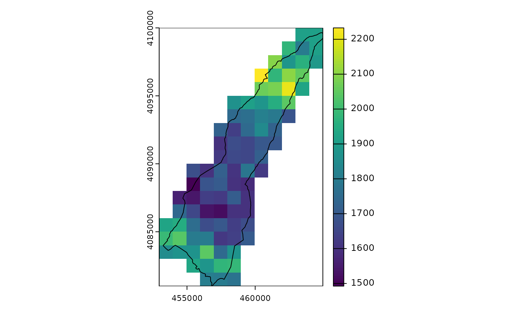

Selecting and transforming satellite bands
Jose Samos (jsamos@ugr.es)
2023-10-05
Source:vignettes/v10-transf.Rmd
v10-transf.RmdIntroduction
In the vignette titled Grouping satellite bands by spectral and
spatial resolution, vignette("satres"), the
satres package is presented. It shows how to create objects
of the satres class from raster files corresponding to
satellite bands. It also shows how to save the data to files or export
it to work with the terra
package.
The main objective of this document is to show the functions
available in the satres package to select and transform the
satellite bands contained in satres class objects before
storing or exporting them.
First, the example data and object creation functions are presented. Then, the functions that allow us to select bands are shown. Continues with other functions to transform the bands. Finally, it ends with the conclusions.
Data and object creation
In this section we discuss the data that we used in the examples, the
objects of the satres class that we created and and we
compare the results obtained.
Data
The data we are going to use is the same as in vignette Grouping
satellite bands by spectral and spatial resolution,
vignette("satres"): Two compressed files of bands from the
Sentinel-2 satellite (obtained from ESA website)
covering the municipality of Lanjarón in Granada (Spain) that, once
unzipped, have been added with a factor of 100 (data resolution has been
multiplied by 100) to be included in the package. We access the folders
that contain them using the following function calls:
esa <- system.file("extdata", "esa", package = "satres")
esa_f <- system.file("extdata", "esa/f", package = "satres")
esa_g <- system.file("extdata", "esa/g", package = "satres")We are also going to work with a vector layer of polygons with the outline of the municipality of Lanjarón, which has also been included in the package in GeoPackage format. We access the file using the following function call:
lanjaron_gpkg <- system.file("extdata", "lanjaron.gpkg", package = "satres")Creation of objects of the satres class
To create an object we only need to indicate the folder that contains the satellite band files.
sr <- satres(dir = esa)By default, only the satellite spectral bands (B01 to
B12) are considered. If we want all available bands to be
included, we have to indicate it using the
only_spectral_bands parameter, as shown below.
sr_all <- satres(dir = esa, only_spectral_bands = FALSE)In both cases, since all the files are contained in the same folder (regardless of how deep they are in the folder structure), the rasters that were tiles of the same work area have been merged.
In the same way, we can create independent objects with each of the folders. In this case, we are only going to consider the spectral bands.
Results obtained
We can see the results obtained so far by consulting the available
spatial resolutions (it will be the same for all objects) and obtaining
objects of class SpatRaster, as shown below.
sr |>
get_spatial_resolution()
#> [1] "r1000m" "r2000m" "r6000m"
r_1000m <- sr |>
as_SpatRaster("r1000m")
r_all_1000m <- sr_all |>
as_SpatRaster("r1000m")
r_f_1000m <- sr_f |>
as_SpatRaster("r1000m")
r_g_1000m <- sr_g |>
as_SpatRaster("r1000m")Below are the band names available for that resolution. Firstly, for the case in which we have only considered the spectral bands, then if we have considered all the bands.
names(r_1000m)
#> [1] "B02" "B03" "B04" "B08"
names(r_all_1000m)
#> [1] "AOT" "B02" "B03" "B04"
#> [5] "B08" "MSK_DETFOO_B02" "MSK_DETFOO_B03" "MSK_DETFOO_B04"
#> [9] "MSK_DETFOO_B08" "WVP"To see the differences between the other objects, for each object, we are going to show one of the bands for that resolution.
terra::plot(r_1000m[["B02"]])
terra::plot(r_g_1000m[["B02"]])
terra::plot(r_f_1000m[["B02"]])In the previous images we can see that the first raster is the result of the fusion of the two following rasters.
Band selection
First, we query the bands available for each spatial resolution; next, we select the bands and spatial resolutions we need.
Get available bands
In the previous section we have used the
get_spatial_resolution() function to obtain the available
spatial resolutions. We show it again below.
sr_all |>
get_spatial_resolution()
#> [1] "r1000m" "r2000m" "r6000m"We can consult the bands available for one or more spatial resolutions. By default they are obtained for all available resolutions, as we can see below.
sr_all |>
get_band_names(res = "r1000m")
#> [1] "AOT" "B02" "B03" "B04"
#> [5] "B08" "MSK_DETFOO_B02" "MSK_DETFOO_B03" "MSK_DETFOO_B04"
#> [9] "MSK_DETFOO_B08" "WVP"
sr_all |>
get_band_names()
#> [1] "AOT" "B01" "B02" "B03"
#> [5] "B04" "B05" "B06" "B07"
#> [9] "B08" "B09" "B11" "B12"
#> [13] "B8A" "MSK_CLDPRB" "MSK_DETFOO_B01" "MSK_DETFOO_B02"
#> [17] "MSK_DETFOO_B03" "MSK_DETFOO_B04" "MSK_DETFOO_B05" "MSK_DETFOO_B06"
#> [21] "MSK_DETFOO_B07" "MSK_DETFOO_B08" "MSK_DETFOO_B09" "MSK_DETFOO_B10"
#> [25] "MSK_DETFOO_B11" "MSK_DETFOO_B12" "MSK_DETFOO_B8A" "MSK_SNWPRB"
#> [29] "SCL" "WVP"Similarly, we can also limit the query to the available spectral bands, as shown below.
sr_all |>
get_spectral_band_names(res = "r1000m")
#> [1] "B02" "B03" "B04" "B08"
sr_all |>
get_spectral_band_names()
#> [1] "B01" "B02" "B03" "B04" "B05" "B06" "B07" "B08" "B09" "B11" "B12" "B8A"Select bands
Once we know the spatial resolutions and available bands, we can
generate a new satres object by selecting only some of them
using the select_bands() function. If any of the parameters
are not indicated, by default it considers all available values, as
shown in the following examples.
sr_sel1 <- sr_all |>
select_bands(res = c("r2000m", "r6000m"),
bands = c("B01", "B02", "B03"))
sr_sel1 |>
get_spatial_resolution()
#> [1] "r2000m" "r6000m"
sr_sel1 |>
get_band_names()
#> [1] "B01" "B02" "B03"
sr_sel2 <- sr_all |>
select_bands(bands = c("B01", "B02", "B03"))
sr_sel2 |>
get_spatial_resolution()
#> [1] "r1000m" "r2000m" "r6000m"
sr_sel2 |>
get_band_names()
#> [1] "B01" "B02" "B03"Other transformation functions
In addition to selecting the bands that we need to work together, we can perform other transformation operations, such as merging the bands that are tiles of the same raster, and clipping all the bands using a polygon as a template.
Merge tiles
In section “Creation of objects of
the satres class”, we have obtained the data of the
area of interest by merging the rasters (in variable sr)
and also in separate rasters (in variables sr_f and
sr_g).
We can merge the individually obtained rasters to form a new object
of the satres class, as shown below.
sr2 <- sr_f |>
merge_tiles(sr_g)Next, we can check that the result is the same as if we had performed the fusion when creating the original object.
terra::plot(r_1000m[["B02"]])
r2_1000m <- sr2 |>
as_SpatRaster("r1000m")
terra::plot(r2_1000m[["B02"]])
sr |>
get_spatial_resolution()
#> [1] "r1000m" "r2000m" "r6000m"
sr |>
get_band_names()
#> [1] "B01" "B02" "B03" "B04" "B05" "B06" "B07" "B08" "B09" "B11" "B12" "B8A"
sr2 |>
get_spatial_resolution()
#> [1] "r1000m" "r2000m" "r6000m"
sr2 |>
get_band_names()
#> [1] "B01" "B02" "B03" "B04" "B05" "B06" "B07" "B08" "B09" "B11" "B12" "B8A"Clip bands
Our objective to obtain and merge the bands is to study the area of the municipality of Lanjarón. We can clip all rasters using a polygon that represents the area of interest. In this case, we are going to use the polygon that defines the outline of this municipality.
As described in section [“Datos”][Datos], we have included a file in
GeoPackage format in the package, whose name is in the
lanjaron_gpkg variable. We read the GeoPackage
layer we need, as shown below.
lanjaron <-
sf::st_read(lanjaron_gpkg, layer = "lanjaron", quiet = TRUE)To perform the clipping operation, the polygon can have any CRS, the CRS that is maintained is that of the raster layers.
sr_lanjaron <- sr |>
clip_bands(polygon = lanjaron)To show the result, we obtain an object of class Z and display one of the raster layers along with the vector layer used to clip them, as can be seen below.
r_lanjaron_1000m <- sr_lanjaron |>
as_SpatRaster("r1000m")
terra::plot(r_lanjaron_1000m[["B02"]])
terra::plot(sf::st_geometry(lanjaron), add = TRUE)
The raster layer has such a coarse granularity because of the transformation we performed to be able to store it in the package.
To show the bands available at the selected spatial resolution, we represent them graphically below.
terra::plot(r_lanjaron_1000m)Conclusion
In this document we have shown how to query and transform the
satres class objects obtained from reading raster
files.
We can select a subset of the available bands and spatial resolutions, we can also merge them and clip them using a polygon.
Additionally, we can save them to files using the
save_by_resolution() function, as shown in Grouping
satellite bands by spectral and spatial resolution,
vignette("satres").